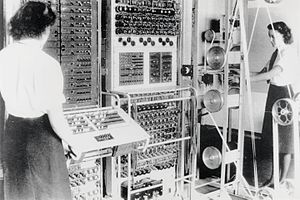
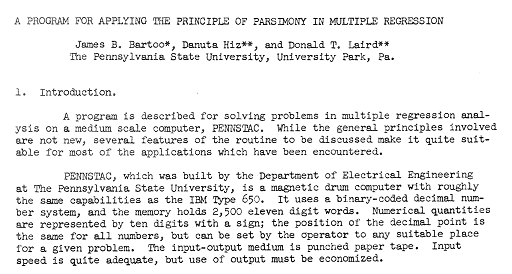
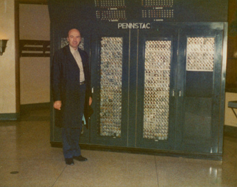
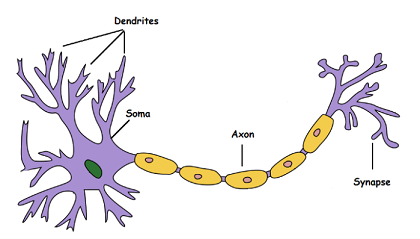
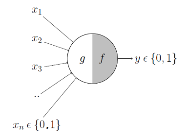
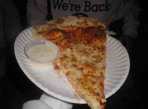
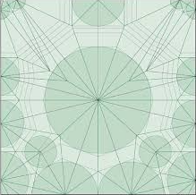
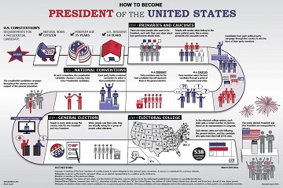
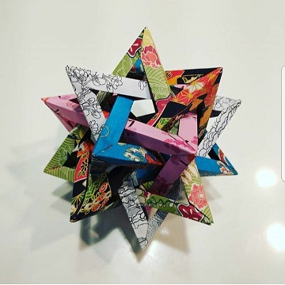
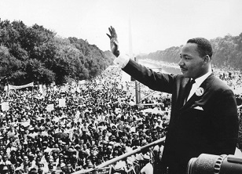

September 12th, 2020
Colossus: The First Computer
Before the invention of the modern transistor, computers normally occupied entire buldings. The appropriately named Colossus was the earliest recorded example of one of these pre-transistor digital computers. The main difference between this computer and its successors was the lack of a stored program architecture. Operators would have to program the machine directly using switches and buttons. This was likely due to the accelerated timeframe of the project, as the computer was used to intercept radiotelegraphy messages used by German army. The machine was completed just in time to collect valuable information that led to the success of D-Day. Sadly, the original engineers who built the machine did not recieve credit until the mid 1970s due to the classified nature of the project. To this day, none of the original prototypes exist as they were destroyed to maintain secrecy. In 2008, a functioning rebuild of the original machine was completed by Tony Sale and several volunteers. The computer is on display at the National Museum of Computing located in Bletchley Park, UK.

A Colossus Mark 2 computer being operated by Dorothy Du Boisson (left) and Elsie Booker (right) circa 1943.
Available here. All images are public domain.
September 20th, 2020
PENNSTAC: Penn State’s First Leap into the Digital Age
Continuing in the same vein as last week’s post, I decided to do a bit of research into Penn State’s personal history with large scale digital computing. PENNSTAC (Penn State Automatic Computer) was the first digital computer to be designed, built, and used on the Penn State campus.
The effort was led by Professor Harold I. Tarpley and Dr. Arthur H. Waynick. Tarpley eventually became the head of the university’s first computer lab. Dr. Waynick was the head of the Electrical Engineering department at the time of PENNSTAC’s inception. The product was fueled using $25,000 of university funds and grants totaling $17,000 from the National Science foundation. Assistance came in the form of hardware from General Electric and IBM. Tarpley had a close relationship with Tom Watson, the head of IBM at the time. It was through this connection that Tarpley was able to secure a magnetic drum for the computer. The magnetic drum would be imperative for storing data and programs.
The computer finally began operation in 1956. It was located in the Electrical Engineering West building. Similar to other early computers, PENNSTAC used vacuum tubes rather than the modern transistor for logic. This meant that the computer could only operate for a few hours at a time due to overheating. It could only be programmed through binary numbers and had about 1/10th the power of modern day PCs. Despite these drawbacks, PENNSTAC could still perform 1,400 additions of 10 digit numbers in one second making it a valuable tool across disciplines. Researchers from areas ranging from chemical engineering to agriculture used the computer for projects such as performing regression calculations and predicting season yields.
I was able to find a paper detailing the development of one of the many programs run on the system. It is very interesting to note that I was able to find this publication after a few minutes of looking through Google Scholar archives, whereas 20 years ago I would have had to physically search for at least a few days.

The introduction from a paper outlining a program using PENNSTAC for regression analysis. Authored by James B. Bartoo, Danuta Hiz, and Donald T. Laird. Circa 1950 - 1985.
Available here.
Finally, I would like to display an image of the system itself. The computer was on display in the Hammond Building for several years. It is now in the basement of its original home, Electrical Engineering West.

PENNSTAC photographed with John N. Warfield, one of the chief designers. Circa 1973.
Available here.
September 28th, 2020
The McCulloch-Pitts Neuron: The Beginning of AI
For this week’s post, I would like to focus on the topic of neural networks. This semester I decided to take an elective on neural network theory. Through this class, I was introduced to the first model used to approximate a single neuron. This model is called McCulloch-Pitts neuron, and was originally proposed in 1943. The model greatly simplifies the action of a biological neuron. Pictures of both are shown below.

Model for a single neuron.
Available here.
{kind=link}

McCulloch-Pitts model.
Available here.
The biological neuron can be broken down 3 main sections. The Dendrite receives information, the Soma processes said information, and the axon/synapse transmits information. If we were to approximate the cell into a function, we would need to replicate these concepts. The McCulloch-Pitts shows these 3 concepts in the diagram. A dataset of X to Xn is shown as the input which replicates the Dendrite. Functions F and G are meant to approximate the decision making of the Soma. Finally, the output is transmitted as Y similar to how the Axon/Synapse transmits output in the neuron. This is a very high level explanation, but the core ideas are still pretty abstract. For further reading, this link is where you should start.
October 3rd, 2020
Canyon Pizza
In college, we eat a lot of things that would make ourselves 4 years from now suffer from heart disease or obesity. A huge category of this type of food is consumed after 2am on the weekends, usually the result of a drunken decision to eat food with as much dough and calories as possible. While this kind of food is effective in slowing down the effect of alcohol and other substances, any person seen eating like this at a normal time and setting would be pegged a fat slob, incapable of making beneficial life choices.

I consider myself to be one of these people, and because of this I am writing to express my love for a well known establishment called “Canyon Pizza” in downtown state college. This restaurant if you could call it that experiences peak hours after midnight, offers pizza for a dollar a slice, has huge unsanitary vats of ranch sauce offered at the end of the counter, and usually has a line stretching around the corner during peak hours. It is the perfect example of a restaurant that knows its target audience. By not focusing on details such as cleanliness and refinement, it leaves resources to create food at an extremely fast pace for a very low cost.
When you go to canyon pizza, you don’t expect good service. You don’t expect healthy food. You don’t expect a good crowd, you don’t expect cleanliness, and you don’t expect clean bathrooms or any at all. These aspects would normally spell death for standard restaurants, but in the setting that canyon pizza lives in it allows them to achieve legendary status.
October 10th, 2020
Digital Origami
With the digital age unfolding in front of this very generation, we have seen various art forms influenced and even changed by the introduction of computers. While it may seem strange, modern origami has been influenced by software as well. When looking at extremely complex models forming creatures like bugs, trees, and generally organisms with multiple appendages, the big question comes to everyone’s mind : “How in the hell did someone design this?”

Origami changed a lot once mathematics and science came into play. Before, most models maxed out at around 50-70 steps. Now, models can have step counts reaching into the thousands. This is possible by creating a specific base for a model using repeating folding trends and using an artists detail to make this base come to life. In order to design a base like this, one needs to start at the crease pattern. If you unfold a complex origami model, all of the major folds will be visible on the paper. This is where the first steps of a design take place. By starting at a skeletal representation of the base that will eventually become an origami model, an artist can design whatever they please out of a single sheet of paper. But designing a base from a skeleton is an extremely challenging task, and requires the use of advanced origami theory such as circle packing. This is where digital computing comes in.
In the 90s, american physicist Robert Lang took an interest in origami as a scientific platform. He developed a program called Treemaker, that served as the link between the skeletal phase and the crease pattern of each origami model. Using the program, artists would be able to input an idea to fold in the form of a stick figure with several nodes. The program would use folding theory to develop a crease pattern that when collapsed, would form a base that could be detailed to the artist’s liking.
October 18th, 2020
Drafting the Cause
It is no secret to every man over 18 that registering in the draft is of utmost importance. This is because the penalty for not doing so is a prison term of 5 years and/or a $250,000 fine. The last time this draft was called was in the 70s for the Vietnam war, so the odds of it being called again are slim unless a major war were to break out in the near future. Registering in the draft is required from everyone regardless of being disabled or not, however those who are unable to serve can register for clearances during an actual draft period. The draft’s fairness is not what I’m going to be talking about, but we have established that it is basically mandatory for all male citizens at a point in their life. Because of this, another question come into play. Since civilians are expected to participate in the draft, should they have more say in foreign policy decisions? Citizens elect certain officials based on their promises of domestic policy and foreign policy, but they can also affect decisions of domestic policy by participating in local politics relatively easily. A similar option does not really exist for foreign policy, which brings in the topic of whether or not a similar option should exist.
As it stands now, Congress holds the power to declare war and authorize large scale military decisions. The president is famously referred to as the Commander in chief, and has pretty much complete control over the military. If the president wanted to launch a full scale military invasion he/she would need support from congress. Small scale operations can be conducted by the president autonomously, famously demonstrated in recent years by President Obama’s mission that resulted in the death of Osama Bin Laden. For covert operations like these, the only influence that the general populace would have is on choosing the president who takes these actions. This makes sense though, because these operations would have to be kept secret to ensure the safety and effectiveness of the mission. When it comes to large scale war declarations, public attitude can have a huge effect on how the war plays out and is viewed. This was most famously observed with the Vietnam War, where public attitude towards the war was very negative. Many men dodged the draft by registering for deferments, and returning veterans were disrespected as opposed to celebrated. If the general population had a say in whether the war would take place or not, it is possible that civilian attitude would have been different. Furthermore, since citizens are expected to participate in the draft then the issue of being rightfully represented for their involvement comes into play.
Some deny the draft because it forces U.S. citizens to act in a war where they would not have any personal stakes or severe fundamental disagreements with how the war started. Since civilians have no real say in the wars that are declared, public opinion on wars cannot really be accurately predicted. In the case of the Vietnam war, many factors contributed to the U.S.’s loss and public reception was one of them. It’s impossible to know if the war would have been different if the public backed it more, but it is definite that the outlook would have been better. Also considering the fact that many would believe it to be logical that the public should have a say in war declarations due to the mandatory nature of the draft, it seems like a no brainer. The problem with implementing a system like this would be inexperienced voters making decisions on sensitive foreign policy, which calls into question the type of system that should be in place. The original question is then called in: Should the public even have a say in matters of national security?
October 25th, 2020
How to Become President

The cornerstone of every democracy is the ability of any citizen to have a say in how the government operates no matter how large or small. For most people, this say takes the form of voting. But, would it be possible for any average person given enough time to effectively lead the free world by becoming president? We pride our political system for being based on equal representation, but it should also extend up to the highest office in the nation. A monarchy only allows those of a select bloodline to become the head of state, while oligarchies make it so that only those of wealth and power can become the head of state. The base requirements to become president are that one must be a natural born citizen and at least 35 years old. These base requirements are very reasonable, but they only mean that those people can run for president. Actually becoming president is another matter with many factors that are in and out of one’s control.
The earliest step one could go through in order to become president is focusing on political studies such as economics, business, political science, history, etc… This is of utmost importance, as the leader of the free world must be someone who is well versed in handling large and small scale problems. While intelligence comes as a god given talent to few, it can also be built up with hard work and discipline. This aspect of becoming president is therefore equal to all. True, the barrier to entry for some might be smaller because of access to better education but enough programs exist that this should be a non issue for those of a lower socioeconomic background with enough drive. The second earliest possible way to become president is by building a political name for yourself and networking. The presidential candidate needs to be the head figure in their party, and that is only possible with having a huge background in that political party. This is something that can vary in difficulty greatly between the average layperson and a member of a influential political dynasty or equivalent. There is a reason why we have so many political dynasties in the U.S. despite the country being founded to get away from one. Even a truly intelligent and charismatic person would still have a large amount of trouble getting from the point of being a nobody in the political world to the point where they can lead a major political party. However, the child of a previous president would be able to capitalize on the connections available to them to easily make a name for themself in their political party. Now, this is not to say it is easy to become president if your father was one. No one has really heard of Reagan’s children in the political world, and it is unlikely for Ivanka Trump to take the position after her father completes his tenure.
While the previous aspects are important, these next few will make or break a person’s chances of being president. Intelligence is the first of these aspects, and different from the education described in the first paragraph. In a scenario where a person is the head of their political party, and well versed in politics enough to actually file an exploratory committee and head on the campaign trial, they will be picked at and tested on all aspects of their life. During this time, the candidates mental strength and fortitude will be tested to the limit. If the american people decide that the candidate’s intelligence is lacking through this process then chances of winning the election plummet drastically. Finally, the most important skill that one needs to become president that ties everything together is charisma. When becoming president, you are convincing the american people that you are the best option to become their leader. You must be the most popular person in the nation, and anyone that talks to you must leave being your friend. A natural inclination towards charisma is important, as thus are social skills. But the thing that separates a presidential candidate from anyone that is easily well liked is a huge dosage of mental strength. Campaigning for president is an extremely mentally and physically taxing process, and maintaining a charismatic demeanor throughout it is nothing short of a superhuman feat. Even the most well equipped people need this skill to become president, and a poor person with this quality could use it to gain the influence they need.
So in contrast from my previous blog posts, the process to become president is one that is truly equal in this country. The only area that previous lineage could actually help is political connections, but those could be built over time by a truly charismatic person. The road to president is one that can only be walked by a few, but those few can come from any place in society.
November 1st, 2020
Modular Hearts

Rewind around 8 years to when I spent more time folding origami than interacting with humans. Being 10 years old, my free time was naturally much greater in quantity than what I have now. Combine this with my less than stellar skill in origami at the time, Modular Origami was the prime option for me to still be able to make things that showed skill and dedication.
The main difference between traditional origami designs and modular origami is the exception to the rule that only one sheet can be used. All of the original rules of origami still apply, so practices like gluing, cutting, or the use of thread are still not permitted. The skill lies in the patience to create sometimes hundreds of distinctly colored units, and assembling them in a way that the only thing keeping the model together is friction. In a way, it’s like folding legos out of paper then putting them together piece by piece.
While my earlier sentiments suggest that modular origami is easier than single sheet origami, in reality that is not the case. The units themselves are simple to fold but the final assembly is where the challenge comes in. Creating a cube out of typical “Sonobe” units would take a minute, but creating an icosahedron would require around 20-25 minutes to complete the assembly due to the nature of the model. Probably the greatest example of this effect however is the 5 Intersecting Tetrahedra. The units themselves could be folded by even the most inexperienced folder, but putting these units together to create the model has proven to be one of the most challenging tasks in the world of modular origami. The actual assembly has no set path to follow, instead opting to use rules of symmetry as a guideline for the model’s creation. The result is nothing other than stunning.
November 8th, 2020
How to Not Die from Scurvy in College
It’s the age old legend. Everyone has a cousin or knew this guy that knew this guy who got scurvy in his freshman year from eating nothing but bottom shelf cup ramen for an entire month. While previous entries of this blog proved otherwise, reader feedback has pushed me up against a wall and is now forcing me to talk about healthy food. When trying to eat healthy as a college student, you first need to realize that you’re probably not going to do it to well and definitely not like you did at home when your mom cooked all your organic meals for you. By focusing on the basics however, you can prevent yourself from contracting scurvy and joining the ranks of idiots past.
The first thing that you need to realize is that you need to stick to the basics. Don’t order processed stuff like chips, candy, or pizza. You know that salad bar in your dining hall? It isn’t just for show. Focusing on the basic foods like raw vegetables, chicken, grilled fish and all will do wonders for your well being. Also cut out the sugary crap in your drink and stick to tea and water. Your body was designed to eat raw materials and gain it’s sugar through fiber rich fruit. Give your body what it wants, and your body will thank you. As for what you should keep in your fridge, snacks are okay. Just don’t make them the only think you eat. Have stuff like fruit, milk, nuts, granola bars, and other various staples so you don’t have to eat 37 bags of Doritos to recover from a regretful Thursday night.
A final note: eggs are your friend. You can cook them in 8888 different ways, they taste good with or without seasoning, they can be made at a high frequency, and they’re also insanely cheap. Furthermore, they’ll get you your protein and essential fats. They’re like the Swiss army knives of college students who don’t get scurvy. Just take care of your body and it’ll take care of you.
November 15th, 2020
Did Grunge Kill Hair Metal?
The music that we listen to today bares little to no resemblance to the chart toppers of the mid 80s. From bands like A-ha to Motley Crue, many of us listening to them in the current century only have two thoughts: “Why were these bands popular?”, and “Where did they go?”. Well, the first one was mainly because the 80s were really weird. People listened to strange music, and dressed in exorbitant fashion. It was a time filled with regretful pictures of our parents. The second one can be attributed to the coming of the next music fad. Grunge was an unstoppable force that exploded on the scene with records bands like Nirvana, Alice in Chains, and Soundgarden all releasing debut albums in 1989. At this time we also saw a shift in music commonplaces. What was the absolute commercialization of popular rock was replaced with nihilistic lyrics , downtuned distorted riffs, and deep low voices that contrasted with the falsetto screeches of glam metal. There are a few reasons for this deep seated paradigm shift in the rock genre. One is that young people were tired of the current fad, and wanted to go onto the next one like generations past. The other starts with the second genre that gained popularity alongside glam metal. Thrash metal in the mid 80s provided an outlet for those that felt a disconnect with popular music. The counterculture within this brand of music brewed for ten years, and broke into the mainstream when popular music adopted a softer style that aligned with the tastes of the general public. This softer style was grunge, and the impacts it had on music are still present today in all genres.
November 22nd, 2020
Speech is Mightier than the Sword

Speech, when used correctly is one of the most powerful tools we have for helping the world or destroying it. While the gift of being an amazing speaker is usually not common, those who have had it can change the world forever. While this may seem impossible to a college student struggling to speak to his/her English class, the truth is anyone can learn speech enough to the point that it can be man’s greatest tool. In the hands of geniuses, speech can bring the world into a new age. Martin Luther King Jr. used the power of speech to lead a civil rights movement that changed the U.S.’s perception of equality forever. On the other hand, dictators like Adolf Hitler and Josef Stalin used speech to almost destroy the world as we know it today. While one person with a sword is able to kill around maybe a few people at the most, a great speaker can motivate thousands to kill millions. On the other hand, one person can do enough good to make a small change in the world. If you want to make a real change in the world, speech as a leader is the only way. By motivating other people to do good in the world, others unrelated to the cause will follow. A great speaker is determined by their confidence and ability to inspire others for their own cause. Without either of those things, that person is just talking into air. That is why speech is tough. Without any real experience it is extremely tough to motivate a crowd to follow your way. Those that do have the ability to move mountains.
November 29nd, 2020
Raging Against the Machine
Judging a music album by the album art is much more acceptable than judging a book by it’s cover. By looking at album cover, I’m able to see the artist’s vision for the album. I can see what emotions the artist wants me to feel, I can get a taste of what the theme of the music is going to be, and depending on how under or overstated it is I can also determine the personality of the artist. In many cases, album art can also be a political statement. It can be a call to arms or a message about some unknown evil. In the case of the self titled album Rage Against the Machine, the album cover provides a look into the civic rhetoric shown by the band. The album cover depicts the buddhist monk Thích Quảng Đức engaging in self immolation as an act of protest against the Diem regime due to the persecution of buddhist monks. The photo inspired several other buddhist monks to do the same, as a selfless act for the better of their community. 5 months later Diem’s regime was toppled by an army coup. Rage Against the Machine chose this album cover to project their ideals of anarchy and social activism against overpowered governments. By choosing such a controversial and graphic image, they appeal to the ethos of their audience by fishing for almost visceral reactions. Those that would be sympathetic to their cause and enjoy the music would be intrigued by the album cover and inspired by the actions of Thích Quảng Đức. Those who would reject the message and the provocative lyrics placed in the music would be turned off by the image, calling it unfit for public display. The themes shown by the album artwork can be observed by the track titles “Bombtrack”, “Settle for Nothing”, “Freedom”, and “Take the Power Back”. The album art provides a window into the world that the artist wants you to see, and in the Rage Against the Machine it is a world where the government fears the people and not the other way around.
December 6th, 2020
Max Folds
I challenge you. Take a piece of paper from anywhere. Fold it once in half. Do this again 8 times. The myth is that you cannot physically do this as hard as you try. I know that exploring this is a far cry from origami, but I was curious about exploring this idea ever since I presented last weeks blog and one of the audience members posed this question to me. And since it’s still paperfolding, it’s basically origami. If you were to fold a standard sheet of paper in half 7 times, it would be the thickness of a 128 page notebook. Fold the same paper 23 times, and it’s as long as a kilometer. Multiply this amount by 4, and your paper is longer than the observable universe. It is physically impossible to do this right now, but theoretically it is possible to do this with a standard letter sized piece of paper. The myth is therefore technically not true, but functionally it is correct. The reason that you can do this is because of the exponential growth function associated with doubling the thickness of the paper every time the paper is folded. Folding the paper at 1km thickness will give it a thickness of 2km. After that, it would be 4km and so on. This is why when folding complex origami models, the type of paper becomes more important than one might think. We will elaborate on these types of paper in a future installment of this blog series, but the main points are the thickness and the strength of the paper. When folding a single piece over and over again, the stress contained reaches to astronomical heights. A standard piece of paper won’t cut it at this point.